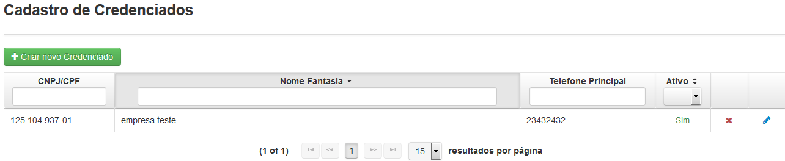
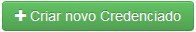

CREDENCIADOS são as pessoas físicas ou jurídicas que se comprometeram com a organização credenciadora (Regional do FUNSA) a prestar serviços de assistência à saúde, através da assinatura de Termo de Credenciamento.
Clicando em 'Credenciados' surgirá uma tela(Fig.7) onde será apresentada uma lista dos credenciados cadastrados.
É possível facilitar a busca de usuários utilizando os filtros CNPJ/CPF, Nome Fantasia e Telefone Principal, bastando apenas clicar e digitar a palavra a ser buscada, ou selecionando a opção Ativo.

Fig.7 Tela 'Cadastro de Credenciados'
O botão ( ) permite desativar e o botão (
) permite desativar e o botão ( ) permite ativar um credenciado.
) permite ativar um credenciado.

Ao desativar ou ativar um credenciado uma mensagem de confirmação será exibida.
OBS: Não é possível desativar um credenciado que esteja vinculado a um edital vigente.
O botão ( ) permite editar um credenciado.
) permite editar um credenciado.

Tela de edição de credenciado
O botão () permite o cadastro de credenciado na tela 'Formulário de Credenciado' (Fig. 8).

Fig.8 Tela 'Formulário de Credenciado'
Para alternar entre CNPJ e CPF é necessário escolher o tipo(Pessoa Jurídica ou Pessoa Física).
Após o preenchimento de todos os campos obrigatórios(*) clique em salvar para cadastrar o novo credenciado.